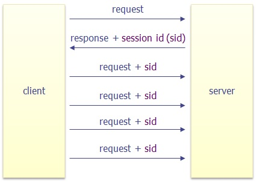
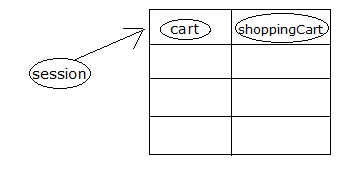

2.3 Session Management
HTTP is a stateless protocol : when it gets a page request, it has no memory of any previous requests from the same client. This makes it difficult to hold a "conversation". This causes a number of difficulties. For example, if an application manages a shopping cart, the information about the shopping cart, needs to somehow be remembered during multiple requests from the client.
Session tracking
Session tracking is keeping track of what has gone before in this particular conversation. The servlet provides a session traking solution : HttpSession API. On the client's first request, the Container generates a unique session ID and gives it back to the client with the response. The client sends back the session ID with each subsequent request. The Container sees the ID, finds the matching session, and associates the session with the request. The simplest and most common way to exchange the ID is through cookies, but can automatically switch to URL rewriting if cookie is disabled.

1. Making a new Session Object
HttpSession session = request.getSession();request.getSession() method creates a new session object. Behind the scene container generate a unique Session Id for this session and send it back to the client.
2. Storing information in session object:
HttpSession objects are basically just hash tables that can store user objects and assoicate each user object with a key. Suppose we have a shoppingCart object, we can bind the object (shoppingCart) with session using key (cart) by the following statements:
ShoppingCart shoppingCart = new ShoppingCart();
session.setAttribute("cart",shoppingCart);
3. Looking up Information associated with a Servlet:
Look at the following code,
HttpSession session = request.getSession();If a session already exists, the above code tells the container to extract the ID from cookie. Then container uses this ID as a key to search into a table of previously created HttpSession objects. If a session found, you can access that session by getAttribute("key") method. Following is the code:
ShoppingCart shoppingCart = (ShoppingCart)session.getAttribute("cart");Note : You can also use request.getSession(false), which returns null if no session already exists.
In following example, the servlet checks for existing session if no session exists it creates a new session otherwise open existing session.
package com.beginwithjava.session;
import java.io.IOException;
import java.io.PrintWriter;
import javax.servlet.ServletException;
import javax.servlet.annotation.WebServlet;
import javax.servlet.http.HttpServlet;
import javax.servlet.http.HttpServletRequest;
import javax.servlet.http.HttpServletResponse;
import javax.servlet.http.HttpSession;
@WebServlet("/counter")
public class SessionCounter extends HttpServlet
{
public void doGet(HttpServletRequest request, HttpServletResponse response)
throws IOException, ServletException
{
response.setContentType("text/html");
PrintWriter out = response.getWriter();
out.println("test sessions");
HttpSession session = request.getSession(false);
if (session == null)
{
out.println("No session was available");
out.println("creating one...");
session = request.getSession();
}
else
{
out.println("there was a session!");
}
}
}Key methods used in HttpSession
We have used getAttribute() and setAttribute methods of HttpSession. Some other important methods used in HttpSession include:
isNew(). Returns true if the client doesn't yet know about the session. If the client has disabled cookies, then a session is new on each request.
getId(). Returns a string containing the unique identifier assigned to this session. Useful when using URL rewriting to identify the session.
setAttribute(). Binds an object to this session, using the name specified.
getAttribute(). Returns the object (with the specified name) bound in this session.
setMaxInactiveInterval(). Specifies the time between client requests before the servlet invalidates this session. A negative time indicates the session should never timeout.
invalidate(). Expires the current session and unbinds the object bound to it.
package com.beginwithjava.session;
import java.io.IOException;
import java.io.PrintWriter;
import javax.servlet.ServletException;
import javax.servlet.annotation.WebServlet;
import javax.servlet.http.HttpServlet;
import javax.servlet.http.HttpServletRequest;
import javax.servlet.http.HttpServletResponse;
import javax.servlet.http.HttpSession;
@WebServlet("/counter")
public class SessionCounter extends HttpServlet
{
public void doGet(HttpServletRequest request, HttpServletResponse response)
throws IOException, ServletException
{
response.setContentType("text/html");
PrintWriter out = response.getWriter();
HttpSession session = request.getSession(false);
if (session == null)
{
out.println("Welcome !");
//Creating a new Session
session = request.getSession();
Integer count = 1;
// bind count to the session object using key 'counter'
session.setAttribute( "counter", count );
}
else
{
out.println("Welcome Back!");
// get the counter
Integer count = (Integer) session.getAttribute( "counter" );
// display the message
out.println("<br>No. of previous visits " + count);
// increment the counter
++count;
// save it back to the session object
session.setAttribute( "counter", count );
}
}
}